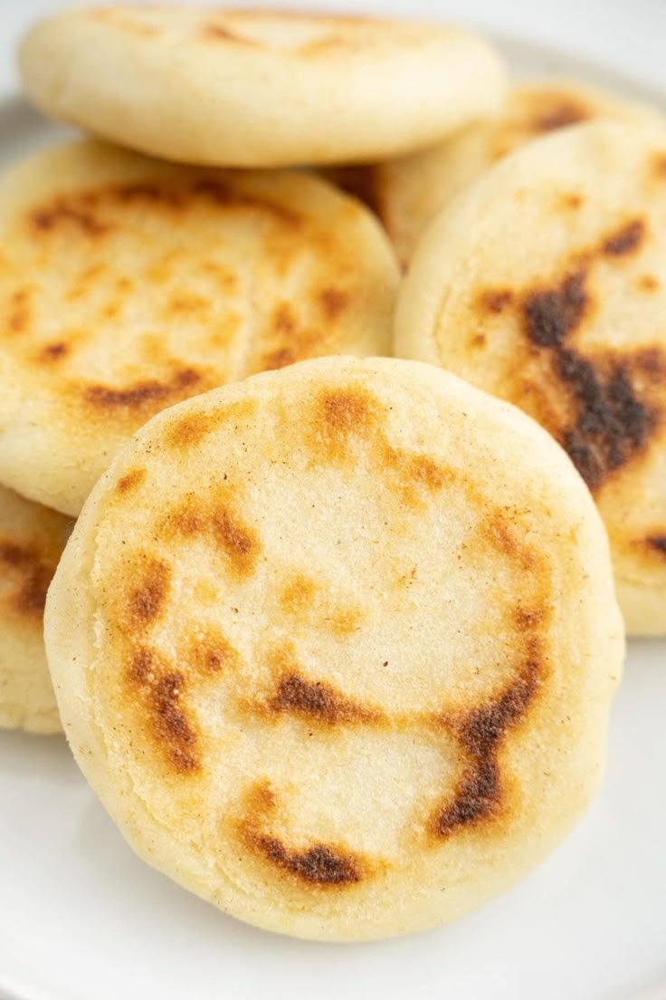

Arepas
Ingredientes:
- 2 tazas (300 gramos) de harina de maíz precocida
- 2 1/4 tazas de agua
- Sal, aproximadamente 1/2 cucharadita (opcional)
Preparación:
- Calentar el budare, la sartén o plancha. Tenga a mano una servilleta doblada a la que habrá colocado un poco de aceite.
- Hacer la masa: en un tazón colocar la harina, agregar la sal si la está usando y añadir el agua a medida que va amasando para evitar que se hagan grumos. Muchas personas hacen lo contrario; primero colocar el agua y luego van agregando la harina. Con cualquiera de los dos procedimientos, hay que amasar bien a medida que se integren los ingredientes para evitar grumos; dejar reposar la masa por 5 minutos.
- Formar las arepas: comprobar que la consistencia de la masa es maleable, un poco mas suave que la plastilina, agregar un poco mas de agua si es necesario. Tomar porciones de masa y hacer una bola, aplanar con la palma de la mano para formar un disco del grosor que desee. Si se hacen grietas en el borde, indica que necesita un poco mas de agua.
- Cocinar las arepas: con la servilleta, "limpiar" o aceitar el budare o plancha, colocar la arepa; si está suficientemente caliente, escuchará un sonido de la masa al tocar la superficie caliente. Cocer de 3 a 5 minutos por lado o según tan tostada quiera la superficie de la arepa. En este punto puede volver a voltearlas para cocer par de minutos por lado para que se abomben, o colocarlas sobre la rejilla del horno y cocinar por unos 15 minutos a 350°F / 150°C; también puedes probar el truco del tostador de pan.
- Hacer lo mismo con toda la masa. Recuerda limpiar el budare con la servilleta cada vez que coloque un nuevo disco para evitar que se pegue (aunque no es necesario agregar mas aceite a la servilleta cada vez).
- Mantenerlas calientes: colocarlas sobre una cesta o plato envueltas en un paño limpio para conservarlas calientes. Servir de inmediato con el relleno o acompañante de su preferencia y disfrutar!
